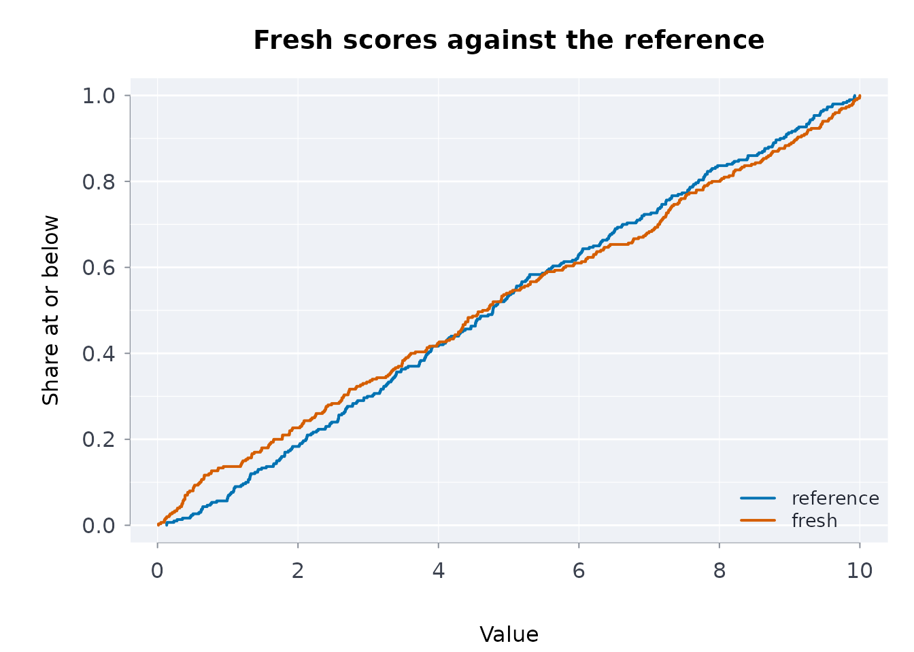

A capsule is only worth pinning if somebody looked at the data first. Looking is the step that gets skipped, because it is tedious and because it is never obviously necessary until afterwards.
This vignette is the short version of looking.
One command
cpsrpt() runs the checks this package provides and puts
the findings in one place, worst first.
reference <- data.frame(
id = 1:300,
score = stats::runif(300, 0, 10),
grade = sample(c("a", "b", "c"), 300, TRUE),
stringsAsFactors = FALSE
)
fresh <- reference
fresh$score <- stats::runif(300, 0, 10)
cpsrpt(fresh, ref = reference,
schema = infsch(reference))
#> ╭── Capsule report ─────────────────────────────────────────╮
#> │ Verdict ✓ these checks found nothing │
#> │ Rows 300 │
#> │ Columns 3 │
#> │ Missing cells 0.0% │
#> │ Complete rows 100.0% │
#> │ Digest ad930cb00cf3cb9fbe8ee20bbaf05c22 │
#> │ Findings 0 │
#> │ │
#> │ No finding is proof of correctness: each check has a │
#> │ stated blind spot, and a small sample has little power. │
#> ╰───────────────────────────────────────────────────────────╯Now a fetch that went wrong in four different ways at once — a rescaled column, a category nobody expected, a column that arrived empty, and one that arrived constant:
broken <- fresh
broken$score <- broken$score * 5
broken$grade[1:100] <- "z"
broken$dead <- NA_real_
broken$flat <- 7
report <- cpsrpt(broken, ref = reference,
schema = infsch(reference))
report
#> ╭── Capsule report ───────────────────────────────────────────────────────────╮
#> │ Verdict ✗ WARNINGS: something moved │
#> │ Rows 300 │
#> │ Columns 5 │
#> │ Missing cells 20.0% │
#> │ Complete rows 0.0% │
#> │ Digest f6feaada9e0873cd12c76519075a8ec1 │
#> │ Findings 8 │
#> │ │
#> │ No finding is proof of correctness: each check has a │
#> │ stated blind spot, and a small sample has little power. │
#> │ │
#> │ FAIL warn drift grade: categorical test, p = < 0.001 │
#> │ FAIL warn drift score: numeric test, p = < 0.001 │
#> │ FAIL warn missing dead: column(s) entirely missing │
#> │ FAIL warn schema range_score: Column 'score' has 226 value(s) │
#> │ outside [-0.8488307, 10.90645] │
#> │ FAIL warn schema unexpected_grade: Column 'grade' has unexpected │
#> │ values: z │
#> │ ! note drift dead, flat: column(s) not in the reference │
#> │ ! note missing dead: a contiguous run of 300 missing values from │
#> │ row 1 -- one outage rather than scattered failures │
#> │ ! note shape flat: constant: no information, and it breaks │
#> │ anything scaled by variance │
#> ╰─────────────────────────────────────────────────────────────────────────────╯
report$verdict
#> [1] "warn"
summary(report)
#> verdict fatal warn note
#> "warn" "0" "5" "3"Each problem is reported once. An entirely missing column is missing, is trivially constant, and makes any covariance singular — reporting all three would bury the findings that matter under a single cause.
rptmd() writes the same assessment beside the capsule it
describes, so it outlives the console.
cat(head(rptmd(report), 12), sep = "\n")
#> # Capsule report
#>
#> **Warnings** -- something moved.
#>
#> | | |
#> |---|---|
#> | rows | 300 |
#> | columns | 5 |
#> | missing cells | 20.0% |
#> | complete rows | 0.0% |
#> | data digest | `f6feaada9e0873cd12c76519075a8ec1c7d7849750e599185ae4140528e355a4` |Per column
profcols() is the underlying description. It reports the
classical and robust centre side by side, which is the cheapest outlier
detector there is: where a mean and a median disagree, the mean is not
describing the column.
messy <- data.frame(
clean = stats::rnorm(200),
bimodal = c(stats::rnorm(100, -3), stats::rnorm(100, 3)),
skewed = c(stats::rexp(199), 500),
zeros = c(rep(0, 50), stats::runif(150))
)
profcols(messy)[, c("column", "mean", "median", "sd", "mad")]
#> ╭── Column profile ─────────────────────────────────────────────────────╮
#> │ Rows 4 │
#> │ Columns 5 │
#> │ │
#> │ column mean median sd mad │
#> │ ------- ------- ------- ------ ------ │
#> │ clean -0.1092 -0.1446 1.034 1.0397 │
#> │ bimodal -0.0061 -0.2015 3.221 4.4949 │
#> │ skewed 3.6339 0.7332 35.295 0.8114 │
#> │ zeros 0.3428 0.2657 0.320 0.3939 │
#> │ │
#> │ Some of this result's columns are not here (a subset of it?), so it │
#> │ is shown as a plain table. │
#> ╰───────────────────────────────────────────────────────────────────────╯The hist column carries what no single number can:
profcols(messy)[, c("column", "hist")]
#> ╭── Column profile ─────────────────────────────────────────────────────╮
#> │ Rows 4 │
#> │ Columns 2 │
#> │ │
#> │ column hist │
#> │ ------- ---------- │
#> │ clean ▁▂▃▇█▇▇▃▃▁ │
#> │ bimodal ▂▆▆▅ ▂▄█▄▁ │
#> │ skewed █ ▁ │
#> │ zeros █▃▂▂▂▂▂▃▁▂ │
#> │ │
#> │ Some of this result's columns are not here (a subset of it?), so it │
#> │ is shown as a plain table. │
#> ╰───────────────────────────────────────────────────────────────────────╯bimodal is visibly two humps. Its mean and median agree
perfectly and tell you nothing about that.
Where the gaps are
The rate of missingness is the least interesting thing about it. Two frames with identical per-column rates can need completely different handling:
structural <- data.frame(
id = 1:20,
a = c(rep(NA, 6), 7:20),
b = c(rep(NA, 6), 7:20)
)
scattered <- data.frame(
id = 1:20,
a = c(rep(NA, 6), 7:20),
b = c(1:14, rep(NA, 6))
)
c(structural = sum(is.na(structural$a)), scattered = sum(is.na(scattered$a)))
#> structural scattered
#> 6 6
misspat(structural)
#> ╭── Missingness patterns ─────────────────────────────────────────────────────╮
#> │ Columns in pattern order: id, a, b │
#> │ Patterns 2 │
#> │ Rows 20 │
#> │ │
#> │ pattern n_rows pctrows n_missing columns │
#> │ ------- ------ ------- --------- ------- │
#> │ ... 14 70.0 0 │
#> │ .XX 6 30.0 2 a, b │
#> │ │
#> │ Each pattern marks the columns missing together; a few large patterns │
#> │ point to a cause worth naming before rows are dropped. │
#> ╰─────────────────────────────────────────────────────────────────────────────╯
misspat(scattered)
#> ╭── Missingness patterns ─────────────────────────────────────────────────────╮
#> │ Columns in pattern order: id, a, b │
#> │ Patterns 3 │
#> │ Rows 20 │
#> │ │
#> │ pattern n_rows pctrows n_missing columns │
#> │ ------- ------ ------- --------- ------- │
#> │ ... 8 40.0 0 │
#> │ ..X 6 30.0 1 b │
#> │ .X. 6 30.0 1 a │
#> │ │
#> │ Each pattern marks the columns missing together; a few large patterns │
#> │ point to a cause worth naming before rows are dropped. │
#> ╰─────────────────────────────────────────────────────────────────────────────╯Two patterns against three. In the first, one structural gap took out both columns in the same rows — those rows are a different population, and often belong dropped or modelled separately. In the second the failures are independent.
missruns() answers a different question again — whether
a gap is one outage or many failures:
missruns(data.frame(
outage = c(1, 2, rep(NA, 8), 11:20),
sporadic = c(1, NA, 3, NA, 5, NA, 7:20)
), minrun = 2)
#> ╭── Runs of consecutive missing values ───────────────────────────────────╮
#> │ Runs 1 │
#> │ Columns with runs 1 │
#> │ Longest run 8 │
#> │ │
#> │ column start end length │
#> │ ------ ----- --- ------ │
#> │ outage 3 10 8 │
#> │ │
#> │ Long runs of missing rows usually mean a source stopped reporting for │
#> │ a while, not values missing at random. │
#> ╰─────────────────────────────────────────────────────────────────────────╯And missgrid() shows the whole table at once, with no
graphics device, so it works over SSH and inside a plain-text
summary:
gappy <- data.frame(
complete = 1:100,
early = c(rep(NA, 30), 31:100),
random = ifelse(stats::runif(100) < 0.3, NA, 1),
late = c(1:70, rep(NA, 30))
)
missgrid(gappy, height = 10)
#> ── Missingness map ───────────────────────────────────────────────
#> cerl
#> oaaa
#> mrnt
#> plde
#> lyo
#> em
#> t
#> e
#> 1 █░
#> 11 █░
#> 21 █▒
#> 31
#> 41 ░
#> 51 ▒
#> 61
#> 71 ░█
#> 81 ░█
#> 91 █
#>
#> legend: ' ' none '█' all missing
#> ──────────────────────────────────────────────────────────────────Is the missingness itself a problem?
Dropping incomplete rows is unbiased only if the data are missing completely at random. Otherwise the complete cases are a biased sample and every downstream estimate inherits the bias.
mcartst() is Little’s test for that assumption. It needs
maximum-likelihood estimates of the mean and covariance under
missingness, which have no closed form, so it carries an EM
estimator.
n <- 400
x <- stats::rnorm(n)
y <- x + stats::rnorm(n)
# Missing on a coin flip: nothing to find.
mcar <- data.frame(x = x, y = y)
mcar$y[sample(n, 120)] <- NA
mcartst(mcar)
#> ╭── Little's MCAR test ────────────────────────────────────────────╮
#> │ Verdict ✓ no departure from MCAR detected │
#> │ Statistic 0.817 │
#> │ df 1 │
#> │ p-value 0.366 │
#> │ Patterns 2 │
#> │ Variables 2 │
#> │ Rows used 400 │
#> │ EM iterations 12 │
#> │ │
#> │ Not evidence OF MCAR: a large p-value is a failure to detect a │
#> │ departure, and this test has little power on small samples. │
#> ╰──────────────────────────────────────────────────────────────────╯
# Missing whenever x is large: the complete cases are a biased sample,
# and that is detectable because the pattern's mean of x is shifted.
mar <- data.frame(x = x, y = y)
mar$y[x > 0.4] <- NA
mcartst(mar)
#> ╭── Little's MCAR test ────────────────────────────────────────────────────╮
#> │ Verdict ✗ MCAR rejected: the missingness is related to the data │
#> │ Statistic 247.984 │
#> │ df 1 │
#> │ p-value < 0.001 │
#> │ Patterns 2 │
#> │ Variables 2 │
#> │ Rows used 400 │
#> │ EM iterations 71 │
#> │ │
#> │ Rows with different patterns of missing values have different means: │
#> │ an analysis of the complete rows alone may be biased. │
#> ╰──────────────────────────────────────────────────────────────────────────╯Read the caveat the second report prints. A large p-value is a failure to detect a departure, not evidence of MCAR, and the test has little power on small samples. Neither this test nor any other can separate missing-at-random from missing-not-at-random, because that depends on values that were never observed — only knowing how the data were collected settles it.
Rows that do not belong
A row can be unremarkable on every column separately and impossible jointly.
people <- data.frame(heightcm = stats::rnorm(300, 170, 10))
people$weightkg <- people$heightcm * 0.5 + stats::rnorm(300, 0, 5)
# Inside both marginal ranges, outside the cloud.
people[1, ] <- list(heightcm = 150, weightkg = 140)
range(people$heightcm)
#> [1] 146.2977 196.0117
range(people$weightkg)
#> [1] 61.95293 140.00000
head(mahaoutl(people), 3)
#> ╭── Mahalanobis outliers (robust) ──────────────────────────────────────╮
#> │ Verdict ! 1 of 3 rows beyond alpha = 0.001 │
#> │ │
#> │ Largest distances first │
#> │ row distance p_value logpvalue outlier │
#> │ --- -------- ------- --------- ------- │
#> │ 1 10.803 < 0.001 -58.355 TRUE │
#> │ 59 3.139 0.007 -4.926 FALSE │
#> │ 203 2.908 0.015 -4.228 FALSE │
#> │ │
#> │ 1 of 3 rows lie beyond alpha = 0.001: row 1 (distance 10.8). │
#> │ │
#> │ The distance measures how far a row is from the centre of the data │
#> │ once the columns' scales and correlations are allowed for; the │
#> │ p-value is from the chi-square distribution it would follow without │
#> │ outliers, and logpvalue its natural log, for rows far in the tail. │
#> ╰───────────────────────────────────────────────────────────────────────╯The default is a robust centre and scale, and that default matters more than it sounds: outliers inflate the very covariance used to judge them, so with several of them the classical distance hides exactly the rows it is meant to find.
Figures that were not measured
Quantities spanning several orders of magnitude follow Benford’s law. Figures that were rounded, capped, rescaled or invented usually do not.
benfordtst(10^stats::runif(2000, 0, 6))
#> ╭── Benford first-digit screen ───────────────────────────────────────────╮
#> │ ✓ consistent with Benford's law │
#> │ │
#> │ values used 2,000 │
#> │ chi-square 3.183 │
#> │ df 8 │
#> │ p-value 0.922 │
#> │ │
#> │ digit observed expected shape │
#> │ 1 0.305 0.301 #################### │
#> │ 2 0.172 0.176 ########### │
#> │ 3 0.127 0.125 ######## │
#> │ 4 0.088 0.097 ###### │
#> │ 5 0.083 0.079 ##### │
#> │ 6 0.065 0.067 #### │
#> │ 7 0.060 0.058 #### │
#> │ 8 0.056 0.051 #### │
#> │ 9 0.044 0.046 ### │
#> │ │
#> │ The leading digits are consistent with Benford's law (p = 0.922); the │
#> │ largest gap is at 4, 8.8% seen against 9.7% expected. Benford's law │
#> │ expects a leading 1 about 30% of the time and a 9 under 5%. A │
#> │ departure is a reason to look closer (rounding, thresholds, made-up │
#> │ figures), never proof by itself. │
#> ╰─────────────────────────────────────────────────────────────────────────╯
benfordtst(as.numeric(paste0(sample(1:9, 2000, TRUE), "000")))
#> ╭── Benford first-digit screen ───────────────────────────────────────────╮
#> │ ! departs from Benford's law (screen only, not a verdict) │
#> │ │
#> │ values used 2,000 │
#> │ chi-square 859.762 │
#> │ df 8 │
#> │ p-value < 0.001 │
#> │ │
#> │ digit observed expected shape │
#> │ 1 0.117 0.301 ################### │
#> │ 2 0.103 0.176 ################# │
#> │ 3 0.098 0.125 ################ │
#> │ 4 0.120 0.097 #################### │
#> │ 5 0.113 0.079 ################## │
#> │ 6 0.101 0.067 ################ │
#> │ 7 0.122 0.058 #################### │
#> │ 8 0.113 0.051 ################## │
#> │ 9 0.113 0.046 ################## │
#> │ │
#> │ The leading digits depart from Benford's law (p < 0.001); the largest │
#> │ gap is at 1, 11.7% seen against 30.1% expected. Benford's law expects │
#> │ a leading 1 about 30% of the time and a 9 under 5%. A departure is a │
#> │ reason to look closer (rounding, thresholds, made-up figures), never │
#> │ proof by itself. │
#> ╰─────────────────────────────────────────────────────────────────────────╯This is a screen, not a verdict. Postcodes, year fields, prices ending in 99 and anything with a unit floor all violate Benford’s law perfectly legitimately. A small p-value is a reason to look.
What none of this does
Every check here has a blind spot, and a clean report means only that these particular checks found nothing:
- the drift tests have little power on small samples;
-
mcartst()assumes multivariate normality, so on markedly non-normal columns a rejection may be telling you about the distribution rather than the missingness; - Mahalanobis distance assumes the bulk of the data is elliptical;
- Benford’s law does not apply to most bounded or assigned quantities.
None of them can tell you the data means what you think it means.
That still requires reading the documentation for the source, which is
the part loadprov() and the manifest exist to keep
attached.
Describing an Indigenous health table
The description functions take any data frame. On the bundled Canadian Community Health Survey indicators by Aboriginal identity:
hi <- indiex("health")
profcols(hi[, c("estimate", "lower", "upper")])
#> ╭── Column profile ──────────────────────────────────────────────────────╮
#> │ Columns 3 │
#> │ Rows 1,080 │
#> │ Numeric 3 │
#> │ With missing values 3 │
#> │ │
#> │ column type n n_missing pct_missing n_distinct nzero │
#> │ -------- ------- ----- --------- ----------- ---------- ----- │
#> │ estimate numeric 1,080 74 6.852 544 0 │
#> │ lower numeric 1,080 74 6.852 514 0 │
#> │ upper numeric 1,080 74 6.852 576 0 │
#> │ │
#> │ column nneg ninf mean sd median mad min max │
#> │ -------- ---- ---- ----- ----- ------ ----- ------ ----- │
#> │ estimate 0 0 31.23 23.37 26.20 20.90 0.2000 95.50 │
#> │ lower 0 0 27.61 22.60 22.05 18.61 0.1000 95.10 │
#> │ upper 0 0 35.30 24.15 30.10 23.28 0.3000 97.90 │
#> │ │
#> │ column skewness n_outliers top q25 q50 q75 hist │
#> │ -------- -------- ---------- --- ----- ----- ----- ---------- │
#> │ estimate 0.9636 36 13.50 26.20 42.80 ███▆▄▃▂▂▂▂ │
#> │ lower 1.1526 59 10.50 22.05 36.98 ██▇▅▃▂▂▂▂▁ │
#> │ upper 0.7558 1 17.12 30.10 48.88 ▇▇█▇▅▃▄▂▂▂ │
#> │ │
#> │ Where the mean and the median (or sd and mad) disagree, the column │
#> │ has outliers or a heavy tail and the mean does not describe it; │
#> │ n_outliers counts the values beyond the Tukey fences. │
#> ╰────────────────────────────────────────────────────────────────────────╯
table(hi$quality, useNA = "ifany")
#>
#> .. E F ok x
#> 40 72 7 934 27The quality column carries Statistics Canada’s flags:
E (use with caution), F (too unreliable to
publish), x (suppressed) and .. (not
available).
The distributions in a picture
The first figure draws each column of messy on its own
scale: the clean column is symmetric, the bimodal one has two peaks, the
skewed one a long right tail (drawn on a log scale), and the last a pile
of zeros. The second compares the fresh scores with the reference scores
as empirical distribution functions with plotecdf(); where
the curves part, the data have changed.
op <- par(mfrow = c(2, 2), mar = c(4, 4, 2, 1))
for (nm in names(messy)) {
x <- messy[[nm]]
if (nm == "skewed") {
hist(
log10(x),
breaks = 30,
col = blpal()[2],
main = "skewed (log10 scale)",
xlab = "log10(value)"
)
} else {
hist(x, breaks = 30, col = blpal()[2], main = nm, xlab = "value")
}
}
par(op)
plotecdf(
c(reference$score, fresh$score),
rep(c("reference", "fresh"), c(nrow(reference), nrow(fresh))),
main = "Fresh scores against the reference"
)